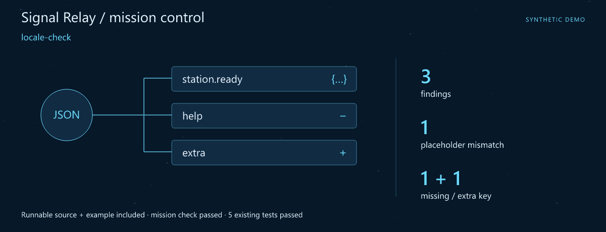
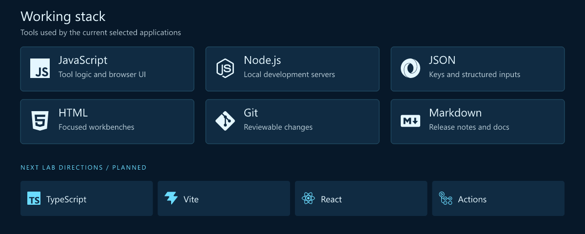
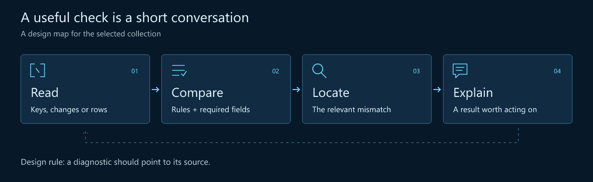
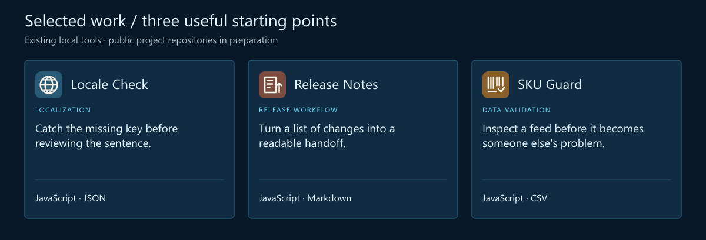
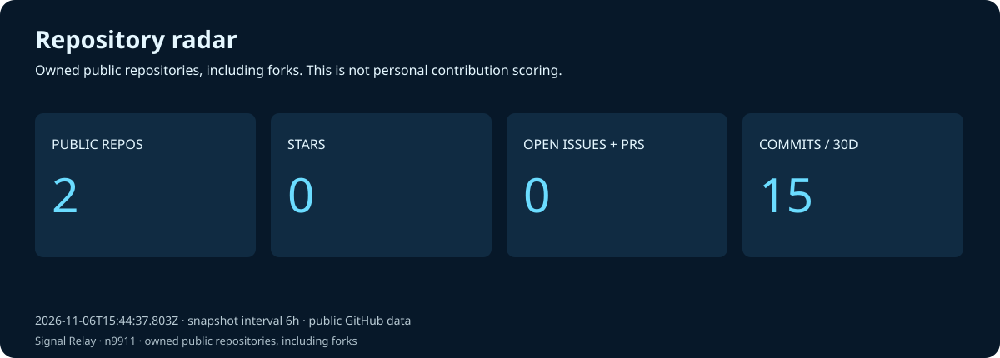
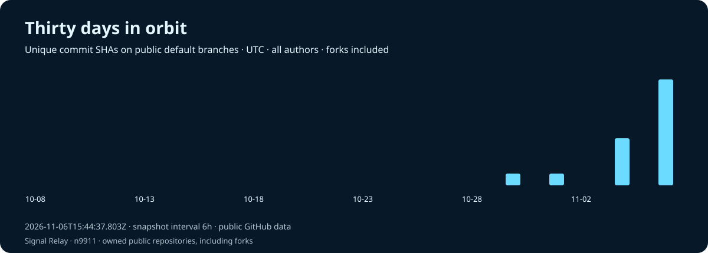
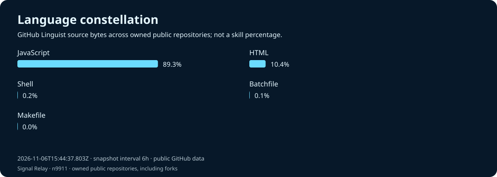
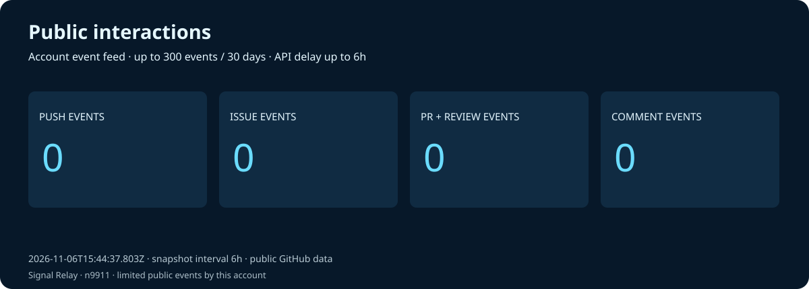

Nori · JavaScript Developer · Developer Experience
Signal Relay · Turn scattered signals into a clear handoff.
Make the small checks feel like part of the workflow.
Download the runnable mission · Launch guide · Working stack · Selected work
Mission control

First launch: locale-check. A complete source snapshot, synthetic example and assertion script are included. The mission check and 5 existing tests passed. Try the mission · Snapshot and checked result.
I'm Nori. I like the details that decide whether a handoff feels smooth: translation keys that agree, a changelog someone can follow, a product feed that has been checked before it moves on.
The goal is a shorter path from “something looks wrong” to an actionable explanation. Small developer tools are a good place to make that path visible.
What I focus on
- Developer experience. Checks should fit the task, explain their result and point to the next action.
- Localization workflows. Key parity and placeholder consistency before the wording review.
- Release readiness. Readable notes and structured inputs make a handoff easier to review.
Working stack

The upper panel shows technologies used by the selected tools. The lower row is the next lab track.
How I think about the work

Selected work
Three existing local tools form this curated collection. Their public project repositories are being prepared.

| Project / stack | Why it belongs here | Input → output |
|---|---|---|
| Locale Check JavaScript · JSON |
Catch the missing key before reviewing the sentence. Compare JSON keys and translation placeholders across source and translated files. | In: Two translation JSON inputs Out: Key and placeholder findings |
| Release Notes JavaScript · Markdown |
Turn a list of changes into a readable handoff. Prepare a changelog from selected local change entries, then edit the text for a reader. | In: Version, date + change entries Out: An editable changelog |
| SKU Guard JavaScript · CSV |
Inspect a feed before it becomes someone else's problem. Check required fields and duplicate SKU values in a product CSV feed. | In: CSV + field requirements Out: A feed validation result |
One placeholder worth keeping consistent
{
"source": { "cart.total": "Total: {amount}" },
"translation": { "cart.total": "Итого: {amount}" }
}
A synthetic comparison example: the wording changes while the key and placeholder stay aligned.
Code and activity




These charts refresh from real GitHub observations on every successful workflow run, scheduled every six hours. At most one daily snapshot is committed; later runs still rebuild and publish the charts. Snapshot commits are labelled automated and authored by the profile owner using a verified GitHub noreply identity, with github-actions[bot] as committer. Owner contribution attribution follows GitHub rules; repository charts still include all authors. The observation time is printed on every chart. Commits are unique default-branch SHAs across all authors and owned public repositories, including forks. Language bytes describe repositories, not personal skill. Public interactions are a limited event feed (up to 300 events / 30 days), not visitor analytics. API and image caches may delay updates.
Live data and scope · Portfolio website · Refresh setup
Next lab
- Type the boundary. Explore TypeScript contracts for inputs and diagnostics.
- Make findings easier to follow. Add clearer paths from a result to its key, field or row.
- Keep examples close. Create small fixtures that show an expected result beside its input.
Start a conversation
A missing translation key, a confusing diagnostic or a changelog that needs a better shape is a useful starting point for a repository issue.
Open the profile repository's issues · Browse the repositories
🧩 Making the small tools fit together.
Fictional developer persona · AI-illustrated avatar. Curated tools retain original authors, licenses and commit history. Technology icons: Simple Icons.